(10) Kyoto16: diff of gaussians#
project = P-VIB, host = mach, device = cuda:1
Motivation:
Fit to this model’s projective fields: gaussian-sigmoid: z-256, (16, 32.0)
Show code cell source
# HIDE CODE
import os, sys
from IPython.display import display
# tmp & extras dir
git_dir = os.path.join(os.environ['HOME'], 'Dropbox/git')
extras_dir = os.path.join(git_dir, 'jb-progress-2025/_extras')
fig_base_dir = os.path.join(git_dir, 'jb-progress-2025/figs')
tmp_dir = os.path.join(git_dir, 'jb-progress-2025/tmp')
# GitHub
sys.path.insert(0, os.path.join(git_dir, '_IterativeVAE'))
from figures.convergence import plot_convergence
from figures.imgs import plot_weights
from figures.fighelper import *
from main.train import *
# warnings, tqdm, & style
warnings.filterwarnings('ignore', category=DeprecationWarning)
warnings.filterwarnings('ignore', category=FutureWarning)
warnings.filterwarnings('ignore', category=UserWarning)
from rich.jupyter import print
%matplotlib inline
set_style()
from analysis.dog import DifferenceOfGaussians
device_idx = 1
device = f'cuda:{device_idx}'
print(f"device: {device} ——— host: {os.uname().nodename}")
device: cuda:1 ——— host: mach
Load trainer#
a = 'gaussian_sigmoid_Kyoto16_t-16_z-[256]_u-(7,2),du-(7,3)_<grad|lin>'
b = 'b200-ep2000-lr(0.005)_beta(32:0.1)_gr(500)_(2025_03_11,23:39)'
tr, meta = load_model(f"{a}/{b}", device)
meta['checkpoint']
2000
u0 = tonp(tr.model.layer.u_init[0].squeeze())
u1 = tonp(tr.model.layer.u_init[1].squeeze())
tr.model.show(order=np.argsort(u0), nrows=16, dpi=80)
tr.model.show(order=np.argsort(u0), nrows=16, dpi=80, method='abs-max');
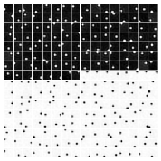
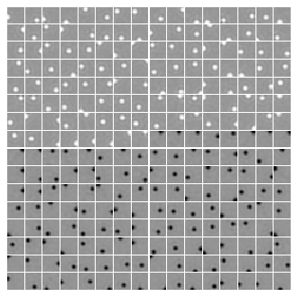
w = tr.model.layer.get_weight().T
absmax = torch.max(w.abs(), dim=1, keepdims=True).values
w_rescaled = 0.5 * (w / absmax + 1)
w, w_rescaled = map(
lambda t: tonp(t).reshape(-1, 16, 16),
[w, w_rescaled],
)
w.shape, w_rescaled.shape
((256, 16, 16), (256, 16, 16))
histplot(w.ravel());
histplot(w_rescaled.ravel());
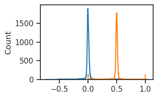
%%time
dog = DifferenceOfGaussians(w).fit()
Detected 120 ON-center and 136 OFF-center cells
Found valid contours for 99 ON-center and 108 OFF-center cells
CPU times: user 2.05 s, sys: 6.82 ms, total: 2.06 s
Wall time: 2.06 s
imshow(dog.fitted_models[7]);
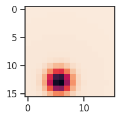
dog.show_fits(figsize=(7, 40))
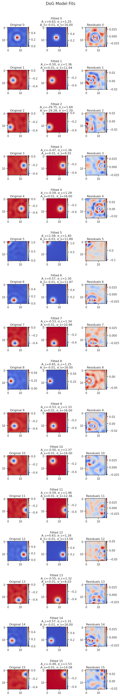
_ = dog.show_3d_surface(0)
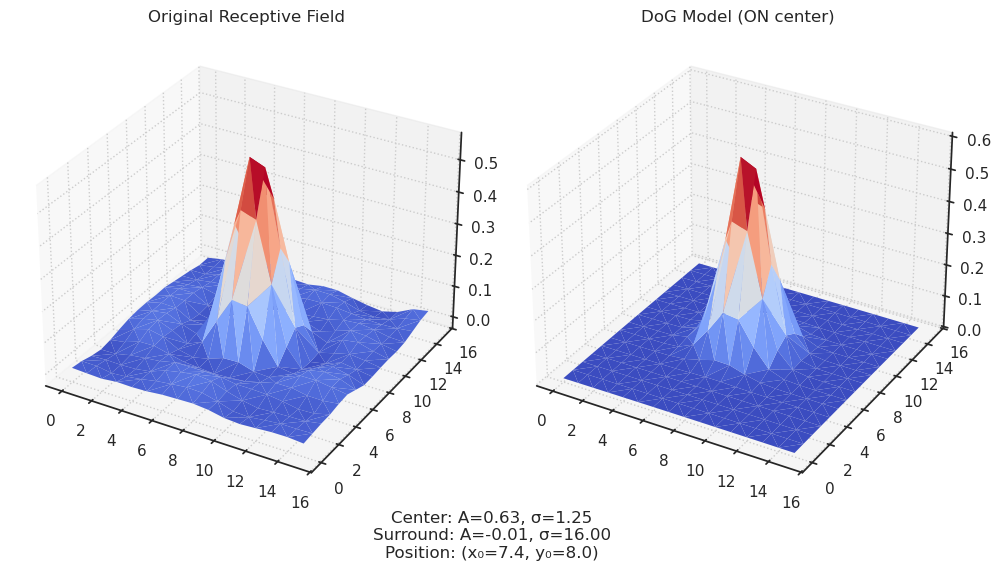
dog.show_contours(nrows=16);
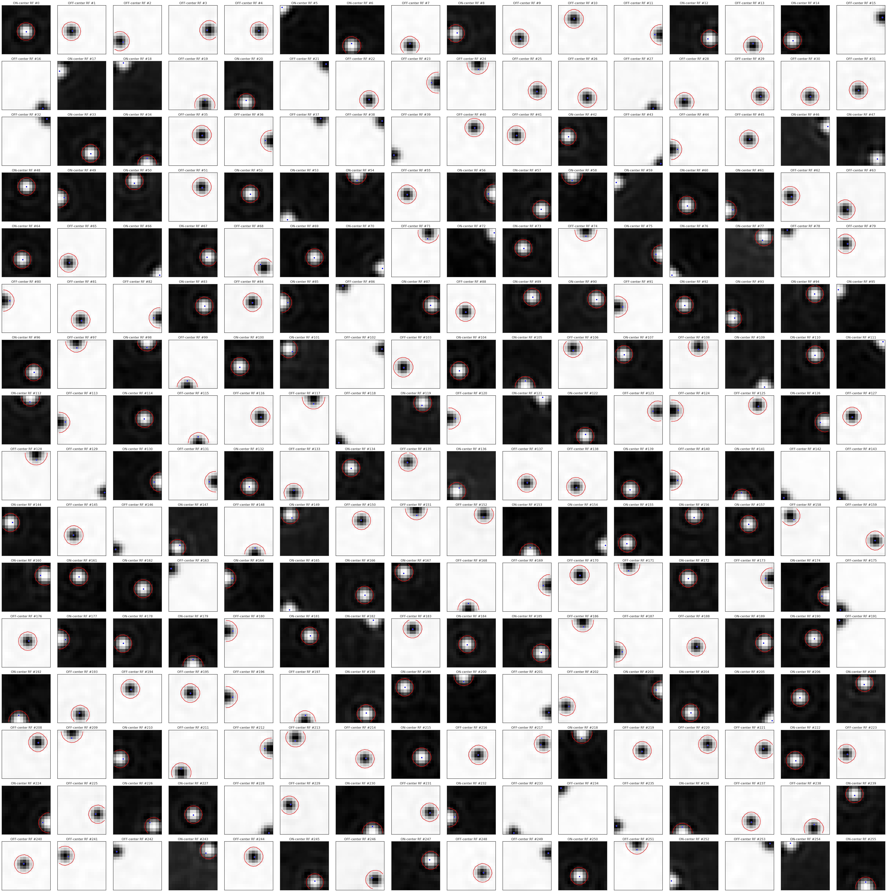
dog.show_mosaic(on_center=True);
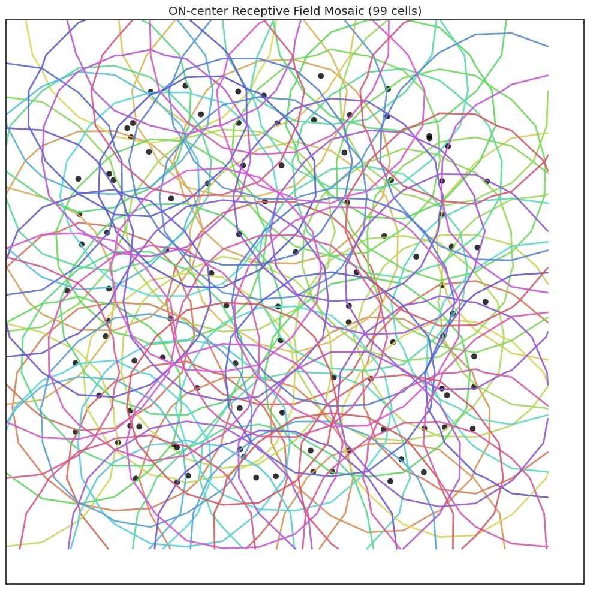
dog.fit_contour(threshold_percent=30)
Detected 120 ON-center and 136 OFF-center cells
Found valid contours for 76 ON-center and 98 OFF-center cells
<analysis.dog.DifferenceOfGaussians at 0x75d62e258490>
plot_weights(
w=w[np.argsort(u0)],
method='none',
vmin=-0.5,
vmax=0.5,
cmap='Greys_r',
nrows=16,
dpi=100,
)
plot_weights(
w=w_rescaled[np.argsort(u0)],
method='none',
vmin=0,
vmax=1,
cmap='Greys_r',
nrows=16,
dpi=100,
);
import numpy as np
from scipy import optimize
import matplotlib.pyplot as plt
from matplotlib import cm
from mpl_toolkits.mplot3d import Axes3D
def difference_of_gaussians_2d(params, x, y):
"""
Computes a 2D Difference of Gaussians function.
Parameters:
-----------
params : list or array
[A_center, sigma_center, A_surround, sigma_surround, x0, y0]
A_center: amplitude of center Gaussian
sigma_center: standard deviation of center Gaussian
A_surround: amplitude of surround Gaussian
sigma_surround: standard deviation of surround Gaussian
x0, y0: center coordinates
x, y : arrays
The x and y coordinates where the DoG function is evaluated
Returns:
--------
DoG : array
The difference of Gaussians value at each (x,y) point
"""
A_center, sigma_center, A_surround, sigma_surround, x0, y0 = params
# Center Gaussian
center = A_center * np.exp(-((x - x0)**2 + (y - y0)**2) / (2 * sigma_center**2))
# Surround Gaussian
surround = A_surround * np.exp(-((x - x0)**2 + (y - y0)**2) / (2 * sigma_surround**2))
# Difference of Gaussians
return center - surround
def fit_dog_to_image(image, initial_params=None):
"""
Fits a Difference of Gaussians model to a 2D image.
Parameters:
-----------
image : 2D array
The image data to fit
initial_params : list or array, optional
Initial guess for [A_center, sigma_center, A_surround, sigma_surround, x0, y0]
If None, reasonable defaults are used based on the image size and values
Returns:
--------
optimal_params : array
The fitted parameters [A_center, sigma_center, A_surround, sigma_surround, x0, y0]
model_image : 2D array
The fitted DoG model evaluated on the image grid
"""
# Get image dimensions and create coordinate grid
height, width = image.shape
y, x = np.indices((height, width))
# If no initial parameters are provided, make a reasonable guess
if initial_params is None:
# Estimate the center of the receptive field as the peak/trough location
if np.abs(np.max(image)) > np.abs(np.min(image)): # ON center
y0, x0 = np.unravel_index(np.argmax(image), image.shape)
A_center = np.max(image)
A_surround = -A_center / 2 # Typical surround-to-center ratio
else: # OFF center
y0, x0 = np.unravel_index(np.argmin(image), image.shape)
A_center = np.min(image)
A_surround = -A_center / 2
# Estimate Gaussian widths based on image size
min_dim = min(height, width)
sigma_center = min_dim / 10
sigma_surround = min_dim / 5
initial_params = [A_center, sigma_center, A_surround, sigma_surround, x0, y0]
# Define the error function to minimize
def error_function(params):
model = difference_of_gaussians_2d(params, x, y)
return np.ravel(model - image)
# Apply constraints (all sigmas must be positive, surround sigma > center sigma)
bounds = [(None, None), # A_center: can be positive (ON) or negative (OFF)
(0.1, None), # sigma_center: must be positive
(None, None), # A_surround: opposite sign to center
(0.1, None), # sigma_surround: must be positive
(0, width-1), # x0: must be within image
(0, height-1)] # y0: must be within image
# Additional constraint: surround sigma > center sigma
constraints = [{'type': 'ineq', 'fun': lambda p: p[3] - p[1]}]
# Fit the model using least squares optimization
result = optimize.least_squares(error_function, initial_params,
bounds=(np.transpose(bounds)[0], np.transpose(bounds)[1]),
method='trf')
optimal_params = result.x
# Generate the fitted model image
model_image = difference_of_gaussians_2d(optimal_params, x, y)
return optimal_params, model_image
def fit_dog_to_image(image, initial_params=None):
"""
Fits a Difference of Gaussians model to a 2D image.
Parameters:
-----------
image : 2D array
The image data to fit
initial_params : list or array, optional
Initial guess for [A_center, sigma_center, A_surround, sigma_surround, x0, y0]
If None, reasonable defaults are used based on the image size and values
Returns:
--------
optimal_params : array
The fitted parameters [A_center, sigma_center, A_surround, sigma_surround, x0, y0]
model_image : 2D array
The fitted DoG model evaluated on the image grid
"""
# Get image dimensions and create coordinate grid
height, width = image.shape
y, x = np.indices((height, width))
# If no initial parameters are provided, make a reasonable guess
if initial_params is None:
# Estimate the center of the receptive field as the peak/trough location
if np.abs(np.max(image)) > np.abs(np.min(image)): # ON center
y0, x0 = np.unravel_index(np.argmax(image), image.shape)
A_center = np.max(image)
A_surround = -A_center / 2 # Typical surround-to-center ratio
else: # OFF center
y0, x0 = np.unravel_index(np.argmin(image), image.shape)
A_center = np.min(image)
A_surround = -A_center / 2
# Estimate Gaussian widths based on image size
min_dim = min(height, width)
sigma_center = min_dim / 10
sigma_surround = min_dim / 5
# Make sure center position is within bounds
x0 = np.clip(x0, 0, width-1)
y0 = np.clip(y0, 0, height-1)
# Ensure sigma values are positive
sigma_center = max(0.1, sigma_center)
sigma_surround = max(sigma_center + 0.1, sigma_surround) # Make sure surround sigma > center sigma
initial_params = [A_center, sigma_center, A_surround, sigma_surround, x0, y0]
# Define the error function to minimize
def error_function(params):
model = difference_of_gaussians_2d(params, x, y)
return np.ravel(model - image)
# Apply constraints (all sigmas must be positive, surround sigma > center sigma)
bounds = [(None, None), # A_center: can be positive (ON) or negative (OFF)
(0.1, None), # sigma_center: must be positive
(None, None), # A_surround: opposite sign to center
(0.1, None), # sigma_surround: must be positive
(0, width-1), # x0: must be within image
(0, height-1)] # y0: must be within image
# Ensure initial parameters are within bounds
for i, (param, (lower, upper)) in enumerate(zip(initial_params, bounds)):
if lower is not None and param < lower:
initial_params[i] = lower
if upper is not None and param > upper:
initial_params[i] = upper
# Additional constraint: surround sigma > center sigma
constraints = [{'type': 'ineq', 'fun': lambda p: p[3] - p[1]}]
# Fit the model using least squares optimization
result = optimize.least_squares(error_function, initial_params,
bounds=(np.transpose(bounds)[0], np.transpose(bounds)[1]),
method='trf')
optimal_params = result.x
# Generate the fitted model image
model_image = difference_of_gaussians_2d(optimal_params, x, y)
return optimal_params, model_image
def plot_dog_results(image, model_image, params):
"""
Plots the original image, fitted model, and residuals.
Also shows a 3D surface plot of the DoG model.
Parameters:
-----------
image : 2D array
The original image data
model_image : 2D array
The fitted DoG model
params : list or array
The fitted parameters [A_center, sigma_center, A_surround, sigma_surround, x0, y0]
"""
fig = plt.figure(figsize=(18, 10))
# Extract parameters for display
A_center, sigma_center, A_surround, sigma_surround, x0, y0 = params
# Plot original image
ax1 = fig.add_subplot(2, 3, 1)
im1 = ax1.imshow(image, cmap='coolwarm')
ax1.set_title('Original Receptive Field')
plt.colorbar(im1, ax=ax1, fraction=0.046, pad=0.04)
# Plot fitted model
ax2 = fig.add_subplot(2, 3, 2)
im2 = ax2.imshow(model_image, cmap='coolwarm')
ax2.set_title('Fitted DoG Model')
plt.colorbar(im2, ax=ax2, fraction=0.046, pad=0.04)
# Plot residuals
residuals = image - model_image
ax3 = fig.add_subplot(2, 3, 3)
im3 = ax3.imshow(residuals, cmap='coolwarm')
ax3.set_title('Residuals')
plt.colorbar(im3, ax=ax3, fraction=0.046, pad=0.04)
# 3D surface plot of the model
ax4 = fig.add_subplot(2, 3, 4, projection='3d')
y, x = np.indices(image.shape)
x = x.flatten()
y = y.flatten()
z = model_image.flatten()
ax4.plot_trisurf(x, y, z, cmap='coolwarm', edgecolor='none')
ax4.set_title('3D Surface of DoG Model')
# Cross-section through the center
ax5 = fig.add_subplot(2, 3, 5)
center_y = int(round(params[5]))
ax5.plot(image[center_y, :], 'b-', label='Original Data')
ax5.plot(model_image[center_y, :], 'r-', label='DoG Model')
ax5.set_title(f'Horizontal Cross-section (y={center_y})')
ax5.legend()
# Display the parameters
plt.figtext(0.5, 0.01,
f"Center: A={A_center:.2f}, σ={sigma_center:.2f} | "
f"Surround: A={A_surround:.2f}, σ={sigma_surround:.2f} | "
f"Position: x₀={x0:.1f}, y₀={y0:.1f} | "
f"{'ON center' if A_center > 0 else 'OFF center'} receptive field",
ha='center', fontsize=12, bbox=dict(facecolor='white', alpha=0.8))
plt.tight_layout()
plt.subplots_adjust(bottom=0.08)
return fig
# Example usage
def create_sample_dog_image(size=50, center_type='ON', noise_sgima=0.05):
"""Create a sample DoG image for testing"""
y, x = np.indices((size, size))
center_x, center_y = size // 2, size // 2
# Parameters depend on whether it's ON or OFF center
if center_type == 'ON':
A_center, A_surround = 1.0, -0.5
else: # OFF center
A_center, A_surround = -1.0, 0.5
sigma_center = size / 10
sigma_surround = size / 5
center = A_center * np.exp(-((x - center_x)**2 + (y - center_y)**2) / (2 * sigma_center**2))
surround = A_surround * np.exp(-((x - center_x)**2 + (y - center_y)**2) / (2 * sigma_surround**2))
# Add some noise
dog_image = center + surround + np.random.normal(0, noise_sgima, (size, size))
return dog_image
on_center = create_sample_dog_image(50, noise_sgima=0.05)
imshow(on_center, cmap='Greys_r')
plt.colorbar()
<matplotlib.colorbar.Colorbar at 0x73507b45ee50>
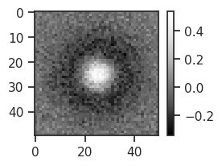
optimal_params, model_image = fit_dog_to_image(on_center)
---------------------------------------------------------------------------
ValueError Traceback (most recent call last)
Cell In[52], line 1
----> 1 optimal_params, model_image = fit_dog_to_image(on_center)
Cell In[48], line 75, in fit_dog_to_image(image, initial_params)
72 constraints = [{'type': 'ineq', 'fun': lambda p: p[3] - p[1]}]
74 # Fit the model using least squares optimization
---> 75 result = optimize.least_squares(error_function, initial_params,
76 bounds=(np.transpose(bounds)[0], np.transpose(bounds)[1]),
77 method='trf')
79 optimal_params = result.x
81 # Generate the fitted model image
File ~/anaconda3/lib/python3.11/site-packages/scipy/optimize/_lsq/least_squares.py:820, in least_squares(fun, x0, jac, bounds, method, ftol, xtol, gtol, x_scale, loss, f_scale, diff_step, tr_solver, tr_options, jac_sparsity, max_nfev, verbose, args, kwargs)
816 raise ValueError("Each lower bound must be strictly less than each "
817 "upper bound.")
819 if not in_bounds(x0, lb, ub):
--> 820 raise ValueError("`x0` is infeasible.")
822 x_scale = check_x_scale(x_scale, x0)
824 ftol, xtol, gtol = check_tolerance(ftol, xtol, gtol, method)
ValueError: `x0` is infeasible.
def gaussian_2d(x, y, amplitude, center_x, center_y, sigma_x, sigma_y, angle):
cos_a, sin_a = np.cos(angle), np.sin(angle)
xx = cos_a * (x - center_x) - sin_a * (y - center_y)
yy = sin_a * (x - center_x) + cos_a * (y - center_y)
g = amplitude * np.exp(-0.5 * (xx**2 / sigma_x**2 + yy**2 / sigma_y**2))
return g
# First, we'll include all the functions from the main code
def difference_of_gaussians_2d(params, x, y):
A_center, sigma_center, A_surround, sigma_surround, x0, y0 = params
center = A_center * np.exp(-((x - x0)**2 + (y - y0)**2) / (2 * sigma_center**2))
surround = A_surround * np.exp(-((x - x0)**2 + (y - y0)**2) / (2 * sigma_surround**2))
# Difference of Gaussians
return center - surround
import numpy as np
import matplotlib.pyplot as plt
from scipy import optimize
def create_sample_dog_image(size=50, center_type='ON'):
y, x = np.indices((size, size))
center_x, center_y = size // 2, size // 2
# Parameters depend on whether it's ON or OFF center
if center_type == 'ON':
A_center, A_surround = 1.0, -0.5
else: # OFF center
A_center, A_surround = -1.0, 0.5
sigma_center = size / 10
sigma_surround = size / 5
# Generate DoG model
center = A_center * np.exp(-((x - center_x)**2 + (y - center_y)**2) / (2 * sigma_center**2))
surround = A_surround * np.exp(-((x - center_x)**2 + (y - center_y)**2) / (2 * sigma_surround**2))
# Add some noise
np.random.seed(42) # For reproducibility
dog_image = center + surround + np.random.normal(0, 0.05, (size, size))
# Print the true parameters for debugging
true_params = [A_center, sigma_center, A_surround, sigma_surround, center_x, center_y]
print(f"True parameters: {true_params}")
return dog_image, true_params
def fit_dog_manually(image):
"""
A simpler version of the fitting function that avoids scipy.optimize
to troubleshoot issues with the optimization.
"""
height, width = image.shape
y, x = np.indices((height, width))
# Estimate center location from max/min
if np.abs(np.max(image)) > np.abs(np.min(image)): # ON center
center_y, center_x = np.unravel_index(np.argmax(image), image.shape)
A_center = np.max(image)
A_surround = -A_center / 2
else: # OFF center
center_y, center_x = np.unravel_index(np.argmin(image), image.shape)
A_center = np.min(image)
A_surround = -A_center / 2
# Use fixed sigmas based on image size
min_dim = min(height, width)
sigma_center = min_dim / 10
sigma_surround = min_dim / 5
params = [A_center, sigma_center, A_surround, sigma_surround, center_x, center_y]
# Generate model
model = difference_of_gaussians_2d(params, x, y)
return params, model
def debug_fitting_problem():
"""Complete test function to debug the DoG fitting issue"""
# 1. Create sample data
size = 50
test_image, true_params = create_sample_dog_image(size=size, center_type='ON')
# 2. Show the sample image
plt.figure(figsize=(10, 4))
plt.subplot(1, 2, 1)
plt.imshow(test_image, cmap='coolwarm')
plt.colorbar()
plt.title('Sample ON-center DoG')
# 3. Try manual fitting without optimization
print("\nTrying manual fitting without optimization...")
manual_params, manual_model = fit_dog_manually(test_image)
print(f"Manual parameters: {manual_params}")
plt.subplot(1, 2, 2)
plt.imshow(manual_model, cmap='coolwarm')
plt.colorbar()
plt.title('Manual DoG fit')
plt.tight_layout()
plt.show()
# 4. Try optimization with explicit parameters
print("\nTrying optimization with explicit parameters...")
# Create coordinate grid
y, x = np.indices((size, size))
# Define error function
def error_function(params):
model = difference_of_gaussians_2d(params, x, y)
return np.ravel(model - test_image)
# Use true parameters as initial guess
initial_params = true_params.copy()
# Define bounds
lower_bounds = [-np.inf, 0.1, -np.inf, 0.1, 0, 0]
upper_bounds = [np.inf, np.inf, np.inf, np.inf, size-1, size-1]
print(f"Initial parameters: {initial_params}")
print(f"Lower bounds: {lower_bounds}")
print(f"Upper bounds: {upper_bounds}")
# Check if initial parameters are within bounds
within_bounds = True
for i, param in enumerate(initial_params):
if param < lower_bounds[i] or param > upper_bounds[i]:
within_bounds = False
print(f"Parameter {i} (value {param}) is outside bounds [{lower_bounds[i]}, {upper_bounds[i]}]")
if within_bounds:
print("All initial parameters are within bounds!")
try:
result = optimize.least_squares(
error_function,
initial_params,
bounds=(lower_bounds, upper_bounds),
method='trf'
)
opt_params = result.x
print(f"Optimized parameters: {opt_params}")
# Create model with optimized parameters
opt_model = difference_of_gaussians_2d(opt_params, x, y)
# Plot results
plt.figure(figsize=(15, 5))
plt.subplot(1, 3, 1)
plt.imshow(test_image, cmap='coolwarm')
plt.colorbar()
plt.title('Original DoG')
plt.subplot(1, 3, 2)
plt.imshow(opt_model, cmap='coolwarm')
plt.colorbar()
plt.title('Optimized DoG fit')
plt.subplot(1, 3, 3)
plt.imshow(test_image - opt_model, cmap='coolwarm')
plt.colorbar()
plt.title('Residuals')
plt.tight_layout()
plt.show()
except Exception as e:
print(f"Error during optimization: {e}")
else:
print("Cannot run optimization with out-of-bounds parameters!")
# Run the test
if __name__ == "__main__":
debug_fitting_problem()
True parameters: [1.0, 5.0, -0.5, 10.0, 25, 25]
Trying manual fitting without optimization...
Manual parameters: [0.5986589107094988, 5.0, -0.2993294553547494, 10.0, 26, 25]
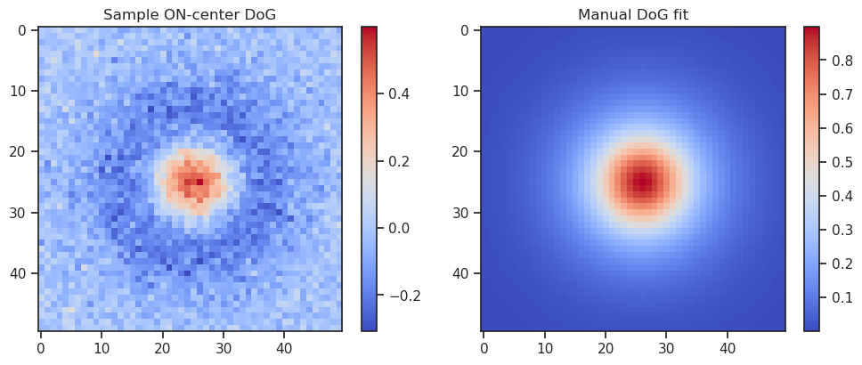
Trying optimization with explicit parameters...
Initial parameters: [1.0, 5.0, -0.5, 10.0, 25, 25]
Lower bounds: [-inf, 0.1, -inf, 0.1, 0, 0]
Upper bounds:
All initial parameters are within bounds!
Optimized parameters: [ 1.02351072 5.11038592 0.52908162 9.79464236 25.02373855 25.03212543]
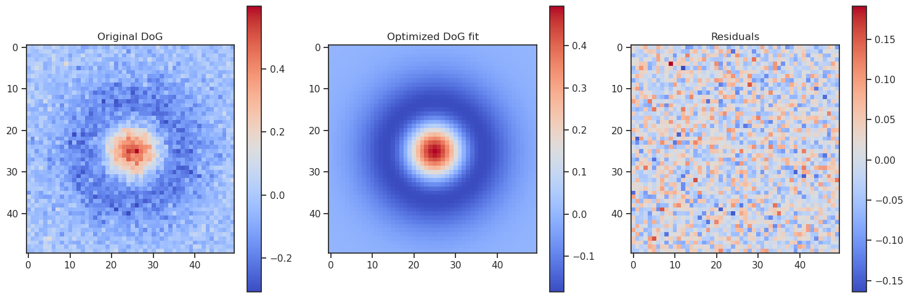
# Example usage
def create_example_receptive_fields(n_weights=4, size=30, include_both_types=True):
"""
Create example receptive fields for demonstration.
Parameters:
-----------
n_weights : int, default=4
Number of receptive fields to create
size : int, default=30
Size of each receptive field (square)
include_both_types : bool, default=True
Whether to include both ON and OFF centers
Returns:
--------
weights : ndarray
Array of shape (n_weights, size, size) containing the receptive fields
"""
weights = np.zeros((n_weights, size, size))
for i in range(n_weights):
# Randomly determine ON or OFF center
if include_both_types:
center_type = 'ON' if i % 2 == 0 else 'OFF'
else:
center_type = 'ON'
# Create coordinate grid
y, x = np.indices((size, size))
# Randomly position the center
center_x = np.random.randint(size // 4, 3 * size // 4)
center_y = np.random.randint(size // 4, 3 * size // 4)
# Parameters depend on whether it's ON or OFF center
if center_type == 'ON':
A_center, A_surround = 1.0, -0.5
else: # OFF center
A_center, A_surround = -1.0, 0.5
# Randomly vary the sigmas
sigma_center = size / (8 + np.random.rand() * 4) # Between size/12 and size/8
sigma_surround = sigma_center * (2 + np.random.rand()) # 2-3x the center sigma
# Generate DoG model
center = A_center * np.exp(-((x - center_x) ** 2 + (y - center_y) ** 2) / (2 * sigma_center ** 2))
surround = A_surround * np.exp(-((x - center_x) ** 2 + (y - center_y) ** 2) / (2 * sigma_surround ** 2))
# Add some noise
weights[i] = center + surround + np.random.normal(0, 0.05, (size, size))
return weights
# Usage example
if __name__ == "__main__":
# Single weight example
print("Creating single weight example...")
size = 30
y, x = np.indices((size, size))
center_x, center_y = size // 2, size // 2
# ON center
A_center, A_surround = 1.0, -0.5
sigma_center = size / 10
sigma_surround = size / 5
center = A_center * np.exp(-((x - center_x) ** 2 + (y - center_y) ** 2) / (2 * sigma_center ** 2))
surround = A_surround * np.exp(-((x - center_x) ** 2 + (y - center_y) ** 2) / (2 * sigma_surround ** 2))
single_weight = center + surround + np.random.normal(0, 0.05, (size, size))
# Create and fit the model
dog_fitter = DifferenceOfGaussiansFit(single_weight)
dog_fitter.fit()
# Show the results
dog_fitter.show_weights()
dog_fitter.show_fits()
dog_fitter.show_3d_surface()
# Batch example
print("\nCreating batch example...")
batch_weights = create_example_receptive_fields(n_weights=4, size=30)
# Create and fit the model
batch_fitter = DifferenceOfGaussiansFit(batch_weights)
batch_fitter.fit()
# Show the results
batch_fitter.show_weights()
batch_fitter.show_fits()
batch_fitter.show_3d_surface(index=0)
print("\nDone!")